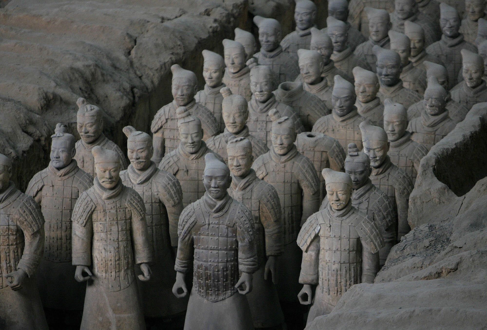
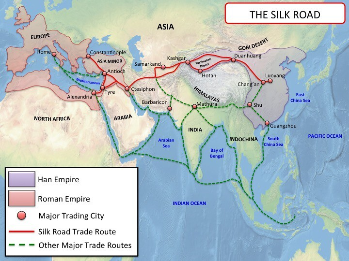
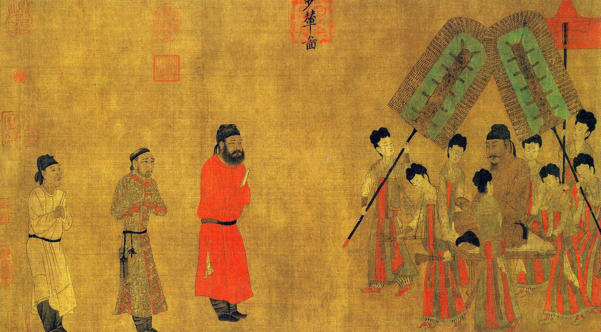
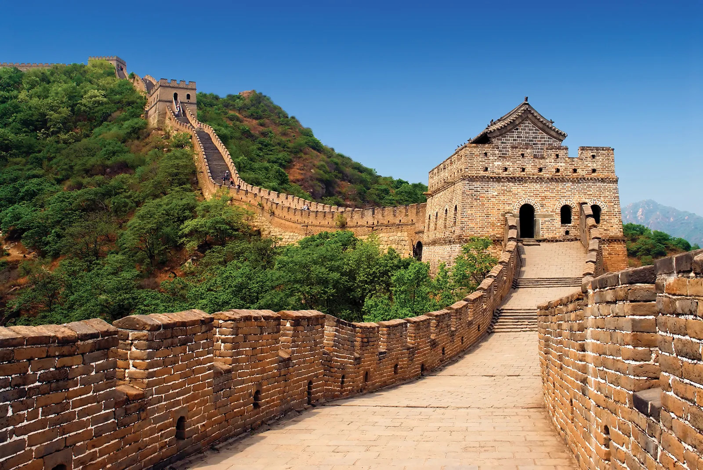
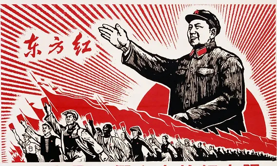

1. Ancient China: The Rise of the Dynasties
China's history dates back over 5,000 years, marked by the rise and fall of various dynasties. The earliest known dynasty, the Xia Dynasty (c. 2070–1600 BC), was followed by the Shang and Zhou Dynasties, which laid the foundation for Chinese culture, philosophy, and governance. The concept of a unified China began to take shape during the Qin Dynasty (221–206 BC), which standardized the written language, currency, and built the first version of the Great Wall.
2. The Silk Road: Connecting East and West
The Silk Road, established during the Han Dynasty (206 BC–220 AD), was an ancient network of trade routes that connected China with Central Asia, the Middle East, and Europe. This exchange of goods, including silk, tea, and porcelain, helped to spread Chinese culture, inventions, and ideas to the rest of the world. It was also instrumental in the spread of Buddhism from India to China, shaping the nation's religious and philosophical landscape.
3. The Tang Dynasty: A Golden Age of Chinese Culture
The Tang Dynasty (618–907 AD) is often regarded as one of the most prosperous and culturally influential periods in Chinese history. During this time, China expanded its territories, established thriving trade routes, and saw the flourishing of the arts, literature, and technology. The Tang capital, Chang'an (modern-day Xi'an), became one of the most cosmopolitan cities in the world, drawing scholars, traders, and artists from across Asia.
4. The Ming Dynasty: The Age of Exploration and the Great Wall
The Ming Dynasty (1368–1644 AD) was a period of strong centralized rule, marked by territorial expansion and the construction of iconic landmarks like the Great Wall of China. During this time, China also began exploring the world, sending fleets led by Admiral Zheng He to Southeast Asia, the Indian Ocean, and even Africa. The Ming Dynasty is also known for its advancements in art, architecture, and literature, leaving a lasting cultural legacy.
5. Modern China: From Imperial Rule to a Communist State
The 20th century saw significant changes in China, as the country transitioned from imperial rule to a republic and eventually became a communist state. The fall of the Qing Dynasty in 1911 marked the end of over two millennia of imperial rule, followed by the establishment of the Republic of China. After decades of civil war, the People's Republic of China was founded in 1949 under the leadership of Mao Zedong, leading to sweeping social and economic changes. Since then, China has emerged as a global power, with rapid industrialization, technological innovation, and increasing influence on the world stage.